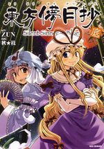

- Welcome to Touhou Wiki!
- Please register to edit. For assistance, check in with our Discord server or IRC channel.
Silent Sinner in Blue/Volume 3
| 東方儚月抄 Silent Sinner in Blue Vol.3 | |
|---|---|
|
 | |
| Developer | |
| Publisher | |
| Released |
October 10, 2009 |
| Writers |
ZUN |
| Illustrators | |
| Comic artists | |
| Pages |
175 |
| Chapters |
7 |
| Followed by | |
| ISBN | |
Summary[edit]
Chapters[edit]
SSiB Chapter Fifteen: The Stardust Human (September 9, 2008)
Translated by Solamarle, edited by Arsen
Summary: Marisa opens the fight with her Stardust Reverie spell card, but finds that her stars don't twinkle in the moon's atmosphere; Yorihime dodges them easily and even eats one. Marisa then tries Event Horizon, but her opponent parries each projectile and counterattacks by channeling Amatsu-Mikaboshi. Reimu expresses doubt towards Remilia's ability to defeat Yorihime, as well as her own chances when she's the one causing trouble rather than solving it. Marisa attacks with Final Spark only for Yorihime to cut it in two, then Double Spark which she reflects with Ishikoridome-no-mikoto's Yata Mirror. Marisa concedes her defeat, and Remilia declares herself the next challenger. The chapter ends with Yuyuko and Youmu walking near a lake, watching the full moon; Yuyuko says that now that Remilia's party has successfully reached the Moon there's only one thing left for them to do.
SSiB Chapter Sixteen: A Map From an Old Friend (November 8, 2008)
Translated by Solamarle, edited by Arsen and Nietz
Summary: Yukari and Ran fly low over each of the lunar seas in turn, trying to reach the entrance to the Sea of Sages before the full moon closes "and the sages' trap is sprung". Remilia is apparently getting the upper hand in her fight with Yorihime... until one of her wings starts smoking from exposure to sunlight. On Earth Yuyuko points Youmu to the moon's reflection in the lake, which is divided in two. Recognising Yukari's handiwork, Yuyuko steps through it and emerges in the lunar seas. Finding Yukari's umbrella lying battered, she remarks that she "can't turn down a request from an old friend like that", and that the umbrella is pointing in the direction they should go. Yorihime says she's been holding off on attacking until she sees Remilia's spell cards first - Remilia uses Queen of Midnight, which Yorihime avoids by channeling Ame-no-uzume-no-mikoto. When Remilia attacks again she channels the sun goddess Amaterasu-oomikami, defeating the vampire instantly.
SSiB Chapter Seventeen: The 27-1/3 Trap (December 9, 2008)
Translated by Solamarle, edited by Nietz
Summary: In Gensokyo, a gap opens in the Bamboo Forest of the Lost. On the Moon, Yukari and Ran arrive at the Sage's Sea and find no one there. Yukari opens a small gap and leaves one of her gloves in it, then declares that they'll steal some treasure from the sage's home. When Ran asks if this sufficient revenge Yukari responds that it's enough, and that the Earth can't hope to stand up to the Moon in terms of power. Reimu is losing her fight with Yorihime, with Marisa saying she's not acting like herself. While complaining about how she prefers fighting youkai to gods, Reimu casually tosses a black ofuda. Yorihime reacts with alarm and destroys it. Reimu responds that she has found her weak point - if she channels Oomagatsumi, god of impurity, then Yorihime will have to prevent any of her attacks from touching the Moon's surface or have its impurity spread. Ran realises how much Yukari planned things out, and that she knew the sage's house would be empty when they arrived. Yukari opens a gap to the house and they walk through, but arrive in the Bamboo Forest of the Lost instead. While Ran looks around in confusion, Yukari starts laughing and throws away her other glove. The gap leading back to the Moon suddenly closes as Watatsuki no Toyohime and Reisen approach, revealing that over 1000 years ago Eirin tampered with the moon's rotational period to shorten how long the path would remain open.
SSiB Chapter Eighteen: The Lunar Mastermind (January 9, 2009)
Translated by Solamarle, edited by Nietz
Summary: Toyohime confronts the Yakumos, mocking them for thinking themselves clever and noting her disgust at the Earth as a place soaked in death. Yorihime is hard-pressed by Reimu's impure attacks, but manages to counter them by channeling the miko goddess Izunome. Back in the Bamboo Forest of the Lost, Toyohime asks if Yukari wants to fight, explaining that her fan is a Lunarian weapon capable of obliterating the entire forest. Yukari bursts into laughter and surrenders, saying she'd never have stood a chance against her in direct combat anyway, and her plan was doomed once her decoy was defeated. She then kneels before Toyohime and begs that since she is the only one who sinned, that the rest of Gensokyo be left alone. Toyohime responds "It's quite impossible for the creatures here to be without sin. Simply living and dying on Earth is sin enough.", but decides that this is also punishment enough and agrees. She then has Reysen prepare to bring the Yakumos back to the Moon for punishment.
SSiB Chapter Nineteen: The Bound God of the Great Earth (February 9, 2009)
Translated by Solamarle, edited by Nietz
Summary: After Reysen ties up the Yakumos, Toyohime explains that the rope is made of femtofiber, an indestructible material that can seal the movements of the impure. Yukari accuses the Lunar Capital of using femtofiber shimenawa to seal enemy gods, identifying the large shimenawa at Izumo's shrine to Ookuninushi and the Moriya Shrine as the likely prisons of Lord Daikoku and his son Take-minakata respectively; Toyohime does not respond to this, but her expression darkens. Reysen receives a report that Yorihime has defeated the rocket group and need her assistance to send them back to Earth. Toyohime says to respond that she's finished too - they've caught all intruders they've found traces of. At this line, Yukari's worried expression becomes a smirk. Rather than bring the Yakumos to the Moon as she said earlier, Toyohime leaves them tied up. Reysen wanders through the forest asking the rabbit youkai for Eirin's location, and Tewi agrees to pass on a message. Eirin is happy to learn that the invasion was foiled, but can't help but feel that things went too well, and worries about how the Watatsukis are doing. On the Moon, Yuyuko and Youmu come upon Yukari's glove still hanging in a gap.
SSiB Chapter Twenty: That Final Trace of Impurity (March 9, 2009)
Translated by Solamarle, edited by Nietz
Summary: Aya Shameimaru arrives at an empty Hakurei Shrine, noting that it's been 10 days since the lunar expedition returned but Reimu wasn't with them. After pondering whether a new shrine maiden is needed, she travels to the Scarlet Devil Mansion but isn't able to gather much information. Reimu eventually returns to the Shrine, greeted by a curious Marisa and Aya. She explains that Yorihime made her stay on the Moon to demonstrate her power of channeling gods and clear her own name, also describes some of the things she saw in the Lunar Capital, including that she caught a glimpse of someone who looked oddly familiar. Some moon rabbits discuss Yorihime's actions and how the fact that someone was channeling gods was apparently what sparked rumors of rebellion in the first place; they're then approached by Yuyuko asking for more information.
SSiB Chapter Twenty-One: The Blue Feast (April 9, 2009)
Translated by Nietz, edited by Nietz
Summary: Reimu says that the person she saw in the Lunar Capital was a ghost, but doesn't understand what a ghost would be doing in a place where people don't die. Remilia arrives to greet Reimu and invite her to a "sea" as apology and thanks. Aya notices a nearby crow take flight. The crow travels to a frustrated Yukari - on hearing what it has to say she smiles and declares that this was her first great victory in a long time. Yukari meets up with Yuyuko, explaining that she had to pretend to be angry for a while because the Lunarians were keeping an eye on her. Ran is confused about what happened - Yukari explains that she made herself a second decoy so that both Watatsuki sisters would be occupied at the same time, and relied on Yuyuko knowing her well enough to figure out her plan and perform the actual task. As ghosts Yuyuko and Youmu possess no impurity, so they were able to hide in the Lunar Capital for a month until Yukari could extract them. While Yuyuko was supposed to steal a valuable treasure, she actually stole a bottle of the Watatsuki sisters' sake; Yukari decides that this was actually a greater victory, since once it's drunk they can't take it back. They drink some of it before travelling to share it with the Scarlet Devil Mansion, where the "sea" turns out to be a swimming pool set up in the library.